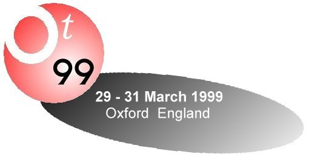

| 
|
|
|
Join Europe's leading experts to explore
contemporary software practice
|
|
|
|
The OT conference enters its seventh year
with an enviable reputation as the place where
experts learn. Join us for the liveliest exchange
of the latest ideas and practical skills in
software architecture, design and development.
|
|
|
OT99 - Europe's best skills transfer event
|
|
This is the seventh OT conference: the event has
established an enviable reputation for exploring new
technologies and breaking new ground in the practice
of software architecture, design, and development.
At the same time, the conference maintains a practical
and experience-based approach to its subject matter.
Careful planning also ensures that OT retains the
intimacy and cohesion for which it is famous.
|
...where the experts learn
|
|
'The OT conference is where experts gather to learn'
says David Harvey, this year's conference chair.
'It is set up specifically to circulate know-how,
but without the sales bias you get at trade shows,
and without the theoretical flavour of some conferences.
All the sessions are interactive - we believe you learn
best by doing.'
The conference has a tradition of active participation.
You'll find that the conference sessions bring people
together to work and learn - in most cases, sessions
are highly interactive, involving participants and
session leaders on an equal footing.
|
|
|
Programme
|
This
year's programme once again addresses the most
pressing concerns of software developers.
The big themes are:
- Patterns
- Pattern languages
--- writers workshop
--- process patterns
--- teaching patterns
--- patterns for distributed systems
- Components and reuse
- Java Beans --- reuse
--- business object frameworks
--- modelling and designing
--- reliability
- Distributed architectures
- CORBA --- ORBs --- middleware
--- low-risk change
--- large-scale trading systems
--- patterns & styles
--- performance
- Design techniques
- UML --- Java --- managing change
--- performance engineering
--- object discovery
--- transformational design
--- concurrency
- Process and management
- Group working --- team structure
--- metrics --- task decoupling
--- failure modes
In addition to the scheduled events,
you are strongly encouraged to
set up meetings at the conference, on any topic
you are interested to talk about.
|
|
Sponsors
|
We are pleased to welcome as sponsors of OT99:
|
|
Web site host |

TriReme Objects & Components
|
|
Accommodation |
Bed, breakfast, and dinner are provided at
Christ
Church college, where a variety of informal
working sessions, gatherings, and diversions occur
in the evening. |